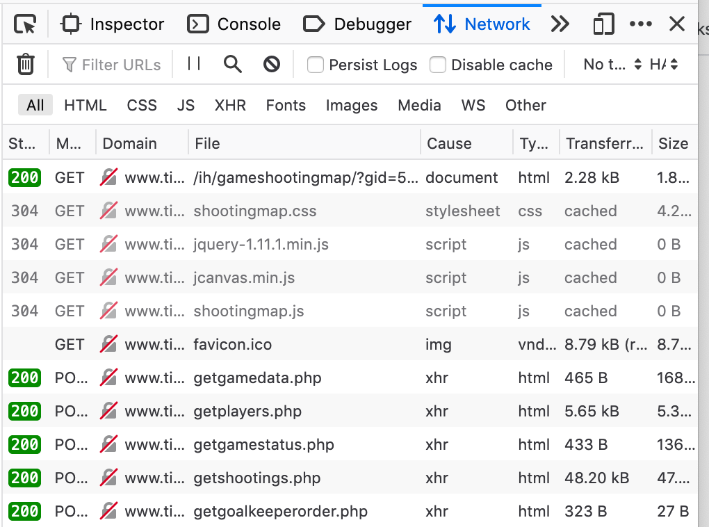

Scraping Nuorten-SM Liiga shot attempts
By Dave MacPherson | Posted Mar 2, 2020
Yesterday, I updated pick224.com/2020 to include stats for February’s games. After doing so, I tweeted about the update and included a screenshot showing first-time draft-eligible players sorted by shots on goal:
I just updated https://t.co/YJiri2jTMg to include stats from all of February's games.
— Dave MacPherson (@davemacp) March 1, 2020
It appears that Veeti Miettinen has been credited with 193 more shots than any other first-time draft-eligible player: pic.twitter.com/H0UY6W1Vfl
Finnish forward Veeti Miettinen, who is committed to join St. Cloud State University’s team next season, appeared to have staggering shot totals.
This led me to dig into the data, because it didn’t seem likely that he actually had nearly 200 more shots than anyone else. I started by looking up the game in which he was credited with the most shots, 18 in this game:

Miettinen’s team, K-Espoo, was shut out by KooKoo goalie Kasper Lehikoinen in that game. Lehikoinen was credited with 51 saves, despite K-Espoo appearing to have 75 shots. The mystery continues.
I then found the shot map for the game, and realized the Finnish junior league tracks all shot attempts, including those that were missed or blocked:
Cool. So, if I wanted to get actual shot on goal totals, I would need to scrape all the individual shots from the shot maps for each game.
To find how and where the shots are stored, I opened the shot map in Firefox, right-clicked, and clicked “Inspect Element” to bring up Firefox’s handy Inspector tool.
Navigating to the Network tab and refreshing the page brought up all the data that goes into the shot map:

By clicking each of these files and looking at the Response tab, I could see what data was sent in order to create the shot map. getshootings.php is the file containing the data for each shot in JSON format:
The Params tab includes the parameters the site uses to populate the Response with the specific game’s data. In this case, each shot map needs a GameID and a season:
Going back to the Network tab, we can access the full getshootings.php file by right-clicking and selecting “Open in New Tab”. The result is one big dictionary containing all of the shot data:
Unlike a lot of PHP webpages, the GameID and season don’t show in the URL — they are instead sent as hidden parameters.
Using the following Python code, I was able to pass the Game ID and season to the PHP file and extract all of the shot data to a CSV file:
I then adapted the code to pull every game of the season, totaled the shot attempts up by game and player, and joined each player’s shots on goal up with the rest of my data. The results make a lot more sense:
Turns out the Finnish junior league tracks all shot attempts, so Veeti Miettinen's previous totals included 148 missed and 28 blocked shots. He still holds the lead, but by much less: pic.twitter.com/Efs677njtS
— Dave MacPherson (@davemacp) March 2, 2020
If you’d like to play with some nice, clean prospect data, check out pick224.com. Follow davemacp on Twitter for updates!